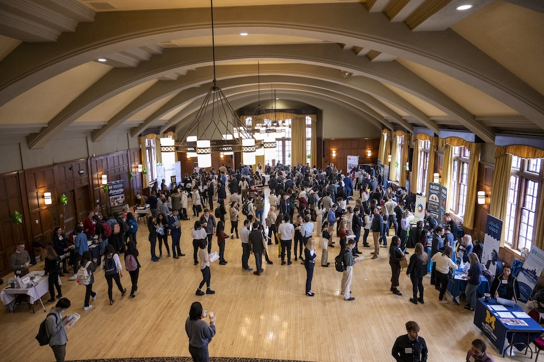

Career Search
Find the Best Plan for Your Job Search

Searching for jobs or internships is always stressful. We've organized essential information and resources when searching for your perfect career.
Recruiting Timeline
- Consulting & Financial Services:
- Recruiting peaks in September - October
- Technology:
- Recruiting peaks in data science, software development, and some UX in September - October, and continues throughout the winter semester, with more UX recruiting peaking in January - April.
- Consumer Goods & Services:
- Recruiting peaks in data science, software development and some UX in September - October and continues throughout the winter semester, with more UX recruiting peaking in January - April.
- Health & Medicine:
- Recruiting peaks in January - May.
- Health Administration Fellowship applications open in October.
- Libraries & Archives:
- Recruiting peaks in January - May
- Nonprofits, startups, design agencies, & government:
- Recruiting peaks in January - May.
- Some government recruiting peaks in September - Oct for agencies requiring security clearance such as the CIA and FBI. Security clearance can take up to 3-6 months.